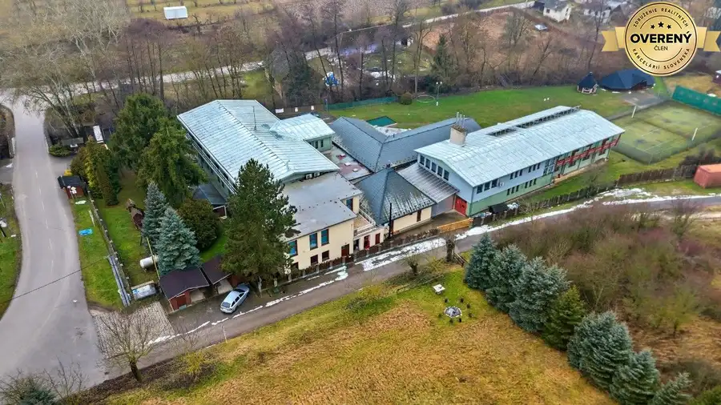
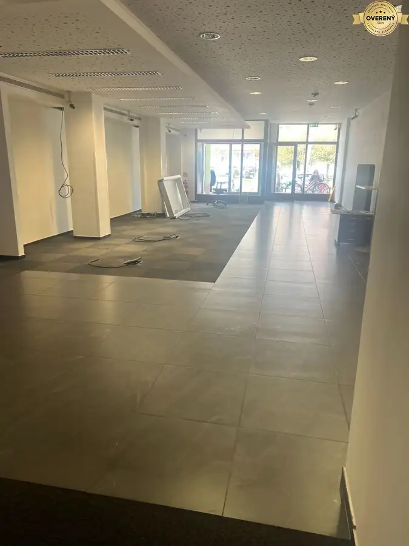
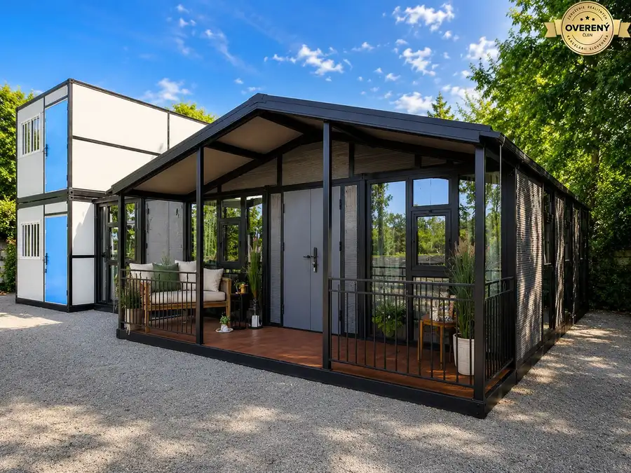

Panoramatický výhľad | znížená cena | Murovaná chata – Červená Veža
Banka
- Dispozícia2-izbový
- Plocha34 m²
- Poschodie0. z 2
- Stavčiastočne prerobený
- Vlastníctvoosobné
O nehnuteľnosti
MIESTO, KTORÉ MÁ ATMOSFÉRU A VYUŽITIE
Táto murovaná chata na Červenej Veži ponúka oveľa viac než len víkendový únik z mesta. Panoramatický výhľad, vlastný vinohrad, vínna pivnička, pokojné romantické prostredie a príroda vytvárajú miesto, kde si môžete skutočne oddýchnuť a tráviť čas podľa svojich predstáv.
Veľkou výhodou je celoročne dostupná prístupová cesta, takže nehnuteľnosť nemusíte vnímať iba ako sezónnu záležitosť. K dispozícii je aj vlastné parkovacie miesto, čo výrazne zvyšuje komfort každodenného využívania.
O bezpečnosť v rámci areálu sa stará vstupná brána s kamerovým systémom, vďaka čomu máte lepší prehľad o dianí pri vstupe do osady.
VIAC AKO CHATA – MOŽNOSTI, KTORÉ OTVÁRA
Nehnuteľnosť môže byť zaujímavou voľbou pre rôzne typy klientov.
Na vlastný oddych – prídete, otvoríte fľašu vína, posedíte vo vinohrade a vychutnáte si pokoj a krásny výhľad.
Na rodinné stretnutia a menšie oslavy – príjemné prostredie ponúka priestor na komornejšie posedenia s rodinou či priateľmi, oslavy, grilovanie alebo letné večery pri pohári vlastného či obľúbeného vína.
Na víkendové bývanie alebo dlhší pobyt – vďaka celoročnej dostupnosti môže slúžiť aj na pravidelné pobyty mimo mesta.
Ako investičná príležitosť – po vhodnom prispôsobení môže byť zaujímavá aj na rekreačný prenájom. Červená Veža a blízkosť Piešťan ponúkajú potenciál pre klientov hľadajúcich pokojné miesto v prírode s dobrou dostupnosťou mesta.
ROMANTIKA, KTORÚ SI NEKÚPITE V KAŽDEJ CHATE
Predstavte si letný večer vo vinohrade, pohár vína v ruke, pokoj okolo vás a nádherný výhľad do krajiny. Žiadny mestský ruch, len príroda, ticho a ľudia, s ktorými chcete tráviť svoj čas.
Murovaná chata, vlastný vinohrad, vínna pivnička, panoramatický výhľad, parkovacie miesto, celoročný prístup a kamerový systém pri vstupe.
To všetko vytvára nehnuteľnosť, ktorá môže byť vaším miestom na oddych, rodinné stretnutia, víkendové bývanie alebo zaujímavou investíciou na prenájom.
A navyše – cena bola znížená.
Ak hľadáte miesto, ktoré má charakter, atmosféru a zároveň ponúka viac možností využitia, táto chata na Červenej Veži určite stojí za osobnú obhliadku.
Ide o samostatne stojacu murovanú záhradnú chatu, vybudovanú v roku 2002, situovanú v záhradkárskej osade Backus v lokalite Škarbalová.
Chata je čiastočne podpivničená a pozostáva z jedného nadzemného podlažia.
Podľa znaleckého posudku:
zastavaná plocha 1. NP: 33,71 m²
zastavaná plocha 1. PP: 8,20 m²
rok výstavby: 2002
murovaná konštrukcia
sedlová strecha
drevené okná s okenicami
keramické podlahy
elektrická prípojka
rozvod studenej vody
úžitková voda
krb s otvoreným ohniskom
WC
čiastočné podpivničenie
Dispozične chata ponúka obytnú miestnosť a zázemie s WC, pričom podpivničenie poskytuje ďalší priestor na uskladnenie.
VINOHRAD A VÍNNA PIVNIČKA
Jednou z najväčších predností tejto ponuky je vinohrad a vínna pivnička.
Práve táto kombinácia dáva nehnuteľnosti osobitý charakter. Nie je to len miesto na víkendový oddych, ale priestor pre človeka, ktorý má vzťah k prírode, vinohradníctvu a dobrému vínu.
Môžete tu tráviť voľné chvíle pri práci vo vinohrade, organizovať posedenia s priateľmi alebo si jednoducho vychutnávať pokojné letné večery mimo mesta.
Úžitková voda zároveň predstavuje praktickú výhodu pri starostlivosti o pozemok a jeho využívaní.
ČERVENÁ VEŽA – BANKA PRI PIEŠŤANOCH
Nehnuteľnosť sa nachádza v rekreačnej oblasti Červená Veža, v katastrálnom území obce Banka, v blízkosti Piešťan.
Lokalita je obľúbená najmä vďaka svojmu prírodnému prostrediu, pokoju a možnostiam rekreácie. Okolie Považského Inovca ponúka priestor na turistiku, cykloturistiku a oddych v prírode, pričom do Piešťan je to len krátka cesta.
Výhodou je aj dostupnosť občianskej vybavenosti v obci Banka a v neďalekých Piešťanoch.
PRE KOHO JE CHATA IDEÁLNA?
Táto nehnuteľnosť je vhodná pre:
milovníkov vína a vinohradníctva,
záujemcov o víkendový alebo rekreačný objekt,
rodinu hľadajúcu vlastné miesto na oddych,
ľudí, ktorí chcú tráviť viac času v prírode,
milovníkov posedení s rodinou a priateľmi,
záujemcov, ktorí hľadajú nehnuteľnosť s vlastným vinohradom a vínnou pivničkou,
klientov, ktorí ocenia možnosť financovania úverom.
MIESTO, KDE SA ŽIVOT SPOMAĽUJE
Nie každá chata má vlastný príbeh. Táto ho má.
Murovaná chata, vinohrad, vínna pivnička, úžitková voda a pokojná lokalita nad Piešťanmi vytvárajú kombináciu pre tých, ktorí nehľadajú iba nehnuteľnosť, ale miesto, kam sa budú radi vracať. Bezpečná vstupná brána ponúka kamerový systém viď foto.
Ak patríte medzi ľudí, ktorí si vedia vychutnať dobré víno, prírodu, pokoj a spoločnosť blízkych, Červená Veža môže byť vaším novým miestom na oddych.
Pre viac informácií, fotografie, pôdorys a dohodnutie obhliadky nás neváhajte kontaktovať.
Poznámka: Možnosť financovania úverom je potrebné vždy posúdiť individuálne podľa konkrétnej banky a bonity klienta.technická hodnota
Parametre
| Rozloha pozemku | 496 m² |
|---|---|
| Zastavaná plocha | 34 m² |
| Celková rozloha | 496 m² |
| Úžitková plocha | 34 m² |
| Poschodie | prízemie |
| Počet poschodí | 2 |
| Počet izieb | 2 |
| Vlastníctvo | osobné |
| Stav | čiastočne prerobený |
| Odvoz odpadu | áno |
| Voda | nie |
| El. napätie | 230V |
| Plyn | nie |
| Kanalizácia | áno |
| Internet | nie |
| Kúpeľňa | nie |
| Vykurovanie | vlastné – kombinované |
| Pivnica | áno |
| Garáž | nie |
| Parkovanie | áno |
| Inžinierske siete | áno |
| Postavené z | tehla |
| Zariadenie | zariadený |
| Zateplený objekt | nie |
| Strecha | po rekonštrukcii |
| Krb | áno |
| Káblová televízia | nie |
| Energetický certifikát | nie |
| Bezbariérový prístup | áno |
| Okná | drevené |
| Terén | mierny svah |
| Prístupová cesta | neupravená cesta |
| Pripravené na výstavbu | predbežný súhlas |
| Dátum zverejnenia | 1. 9. 2026 |
Kde to je
Mohlo by Vás zaujímať

Hotely a penzióny5 Cena dohodouKopanice Resort | Výnosová investícia Podkylava 36502 m² DOBRÉ REALITY – Sme spoľahlivá realitná spoločnosť a líder v oblasti realitných služieb. Viac ako 15 rokov nám dôverujú tisícky klientov po celom…
Nebytové priestory5 1 999 €Kancelárie Piešťany – prenájom moderných priestorov , 210m2 Piešťany 210 m² ...
Rodinné domy 29 900 €Moderný mobilný dom s terasou | Stačí osadiť a bývať | Ideálny na býva Piešťany 2-izbový100 m² DOBRÉ REALITY – Sme spoľahlivá realitná spoločnosť a líder v oblasti realitných služieb. Viac ako 15 rokov nám dôverujú tisícky klientov po celom…